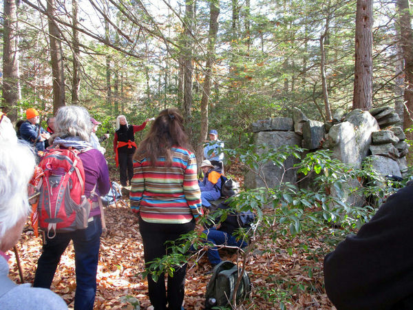
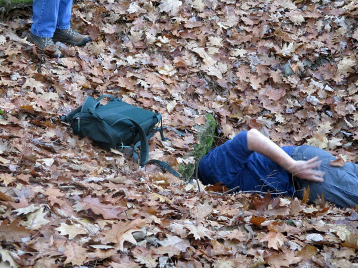
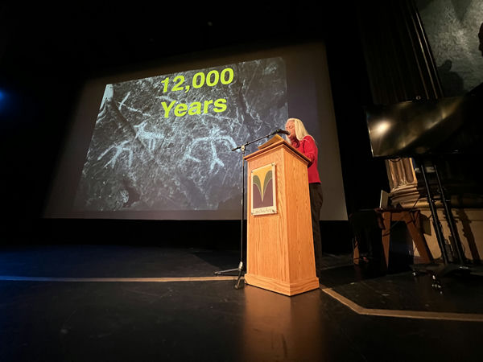
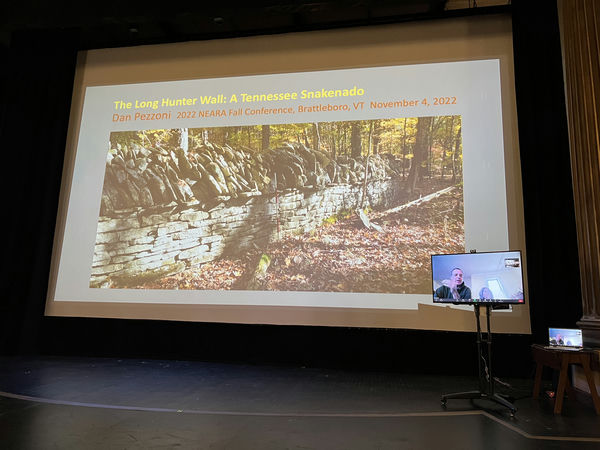
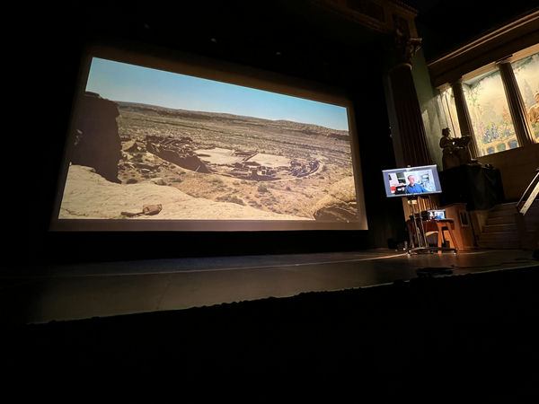
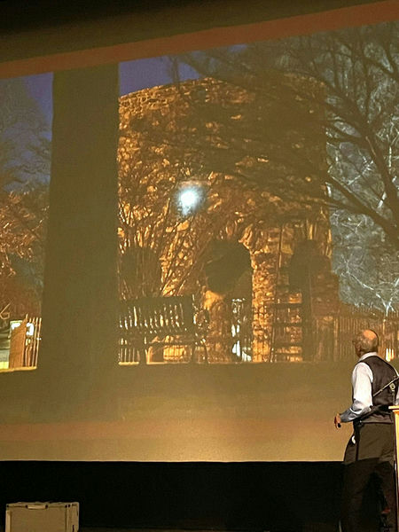
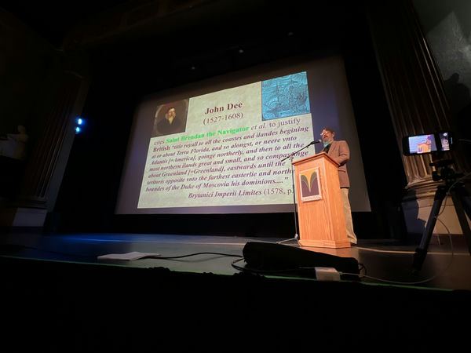
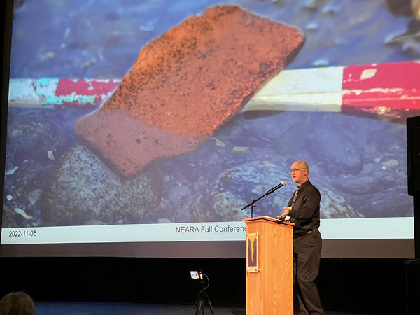
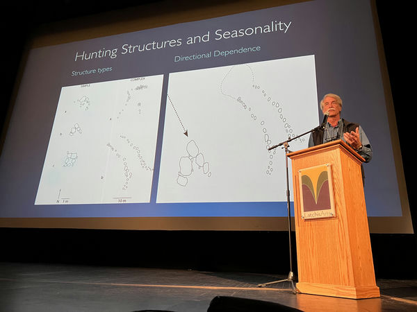

The videos are on our new YouTube channel.
Videos that are only available for NEARA members are behind a login at SiteDB.org.
Land Acknowledgement and Shutesbury "Shrine" and Surrounds, Anne Marie Kittredge
(This is only available for NEARA members by logging in at SiteDB.org)
Celtic Monastic Oratories in New England? The Gungywamp-1 and Calendar II Chambers, Vance Tiede
(This is only available for NEARA members by logging in at SiteDB.org)
One field trip was on Friday, and two were on Sunday.
Shutesbury's "Shrine" and Surrounds in Massachusetts, Anne Marie Kittredge.
Read more about the field trip in this
newspaper article.
A Newly Discovered Potential CSL in Putney Vermont, Mike Luoma & Art Camp
Burnt Hill in Heath Massachusetts, Anne Marie Kittredge & Vance Tiede & Sonny Nartowicz
Photos

The "Shrine" megalith, by Janice S. Stone

The ravenous Chamber #2 and the winner of our Head First Award, by Janice S. Stone
At the Latchis Theater

Anne Marie Kittredge, by Matt Adams

Dan Pezzoni, by Matt Adams

Dan Pezzoni, by Matt Adams

Not quite life-sized image of Newport Tower, with Jim Egan, by Janice S. Stone

Vance Tiede, by Matt Adams

Terry Deveau, by Matt Adams

Dr. John O'Shea, by Matt Adams